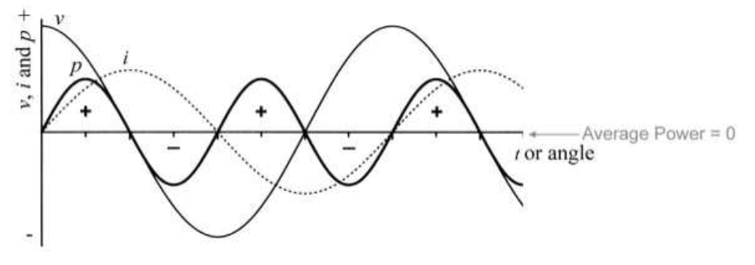

JENIS BEBAN LISTRIK
Beban listrik adalah suatu alat atau benda yang dapat bekerja atau berfungsi apabila dialiri arus listrik yang berpotensial (dapat bekerja dengan memanfaatkan energi listrik). Contoh : lampu, alat-alat ramah tangga, alat-alat elektronik, selain itu alat-alat yang digunakan untuk merubah energi listrik menjadi energi lain misal gerak dan panas, dan lain sebagainya.
Untuk di ingat : Beban listrik adalah alat yang dapat bekerja dengan memanfaatkan energi listrik.
Berdasarkan sifat suatu beban listrik dapat dibedakan menjadi 3 yaitu :
- Resistif
- Beban Resistif merupakan komponen yang hanya terdiri dari resistan (ohm)
- Beban resistif hanya mengkonsumsi daya aktif sehingga faktor daya bernilai tetap
- Bekerja dengan prinsip hambatan sehingga arus listrik akan terhambat dan dapat menyebabkan panas (Beban R akan menyebabkan Panas)
- Tidak mempengaruhi gelombang Tegangan dan Arus sehingga gelombang akan tetap sefasa
- Induktif
- Beban Induktif bekerja berdasarkan prinsip kerja induksi karena beban induktif berupa kumparan
- Beban induktif menyerap daya aktif dan reaktif
- Menghasilkan daya harmonik yang menyebabkan nilai $cos \pi < 1$
- Kumparan menyebabkan terhambat laju arus sehingga gelombang arus tertinggal (lagging) dari gelombang tegangan
- Kapasitif
- Beban kapasitif memiliki kemampuan kapasitansi yaitu menyimpan energi listrik dalam waktu sesaat
- Beban kapasitif menyerap daya aktif dan membuang daya reaktif (Sebab mengapa kapasitor digunakan untuk memperbaiki $cos \pi$)
- Beban kapasitif menghambat laju tegangan sehingga gelombang arus mendahului (leading) terhadap tegangan
- Perbedaan mendasar antara beban L dan C yaitu beban L menyimpan energi listrik dalam bentuk medan magnet sedangkan beban C menyimpan energi listrik murni.
Beban yang memiliki sifat resistif akan memiliki sifat yang sama dengan resistor (R). Apabila beban tersebut dialiri arus listrik maka arus listrik yang mengalir melalui beban tersebut adalah arus nominal pada beban dan memiliki nilai yang tetap sehingga tidak diaktifkan. Contoh beban beban listrik yang bersifat resistif adalah lampu pijar (penerangan), setrika, teko listrik, dan alat-alat rumah tangga yang bersifat pemanas lainnya.
Resistor bersifat menghalangi aliran elektron yang melewatinya (dengan jalan menurunkan tegangan listrik yang mengalir), sehingga mengakibatkan terkonversinya energi listrik menjadi panas. Dengan sifat demikian, resistor tidak akan merubah sifat-sifat listrik AC yang mengalirinya. Gelombang arus dan tegangan listrik yang melewati resistor akan selalu bersamaan membentuk bukit dan lembah. Dengan kata lain, beban resistif tidak akan menggeser posisi gelombang arus maupun tegangan listrik AC.

Untuk di ingat :
Beban yang bersifat induktif memiliki sifat yang sama dengan induktor (L). Arus listrik yang mengalir melalui beban tersebut akan disimpan dalam bentuk medan magnet karena arus listrik yang mengalir akan terinduksi dan dirubah menjadi medan magnet sehingga dapat tersimpan. Misalnya motor listrik ketika digerakkan dengan cara dialiri arus listrik maka nilai arus start-nya akan 3 kali lebih besar dari arus nominal, dan ketika motor listrik telah runing maka nilai arus listrik akan sama dengan nilai arus nominal. Contoh beban listrik yang bersifat induktif adalah pompa air, blender, kipas angin dan alat-alat yang memanfaatkan energi listrik untuk menghasilkan energi gerak sebagai penggerak baban utama.
Beban induktif diciptakan oleh lilitan kawat (kumparan) yang terdapat di berbagai alat-alat listrik seperti motor, trafo, dan relay. Kumparan dibutuhkan oleh alat-alat listrik tersebut untuk menciptakan medan magnet sebagai komponen kerjanya. Pembangkitan medan magnet pada kumparan inilah yang menjadi beban induktif pada rangkaian arus listrik AC.
Beban untuk membangkitkan medan magnet putar pada stator motor induksi tersebut, tentu membutuhkan energi listrik khusus. Beban induktif pada motor induksi inilah yang ditanggung oleh daya reaktif sumber listrik AC. Sedangkan daya listrik yang dibutuhkan motor induksi tersebut untuk memutar beban yang terkopling pada porosnya, disebut dengan daya nyata. Jumlah resultan daya reaktif dan daya nyata disebut sebagai daya semu.
Kumparan memiliki sifat untuk menghalangi terjadinya perubahan nilai arus listrik. Seperti yang kita ketahui bersama bahwa listrik AC memiliki nilai arus yang naik turun membentuk gelombang sinusoidal. Perubahan arus listrik yang naik turun inilah yang dihalangi oleh komponen kumparan di dalam sebuah rangkaian listrik AC. Terhalangnya perubahan arus listrik ini mengakibatkan arus listrik menjadi tertinggal beberapa derajat oleh tegangan listrik pada grafik sinusoidal arus dan tegangan listrik AC.
Untuk di ingat :
Beban yang bersifat kapasitif memiliki sifat yang sama dengan kapasitor (C). Hampir sama dengan induktor yang menyimpan energi listrik hanya saja, beban yang bersifat kapasitif menyimpan energi listrik murni. Pada industri-industri besar yang menggunakan penggerak berupa motor listrik memerlukan kapasitor untuk menghemat daya.
Beban kapasitif merupakan kebalikan dari beban induktif. Jika beban induktif menghalangi terjadinya perubahan nilai arus listrik AC, maka beban kapasitif bersifat menghalangi terjadinya perubahan nilai tegangan listrik. Sifat ini menunjukkan bahwa kapasitor bersifat seakan-akan menyimpan tegangan listrik sesaat.
Gambar di atas adalah gelombang sinusoidal tegangan dan arus listrik AC pada beban kapasitor murni. Nampak jika kita plot daya listrik yang dibutuhkan untuk menanggung beban kapasitor juga berbentuk sinusoidal. Daya listrik bernilai positif (daya diserap kapasitor) pada setengah pertama gelombang sinusoidal daya, serta negatif (daya dikeluarkan kapasitor) pada setengah gelombang kedua.
Untuk di ingat :
Gambaran gelombang arus dan tegangan dalam bentuk yang lebih sederhana dan agar mudah dipahami.
Untuk di ingat :
- Beban R untuk gelombang arus dan tegangan selalu beriringan (sefasa)
- Beban L untuk gelombang arus tertinggal (lagging) dari gelombang tegangan
- Beban C untuk gelombang tegangan tertinggal (lagging) dari gemlombang arus